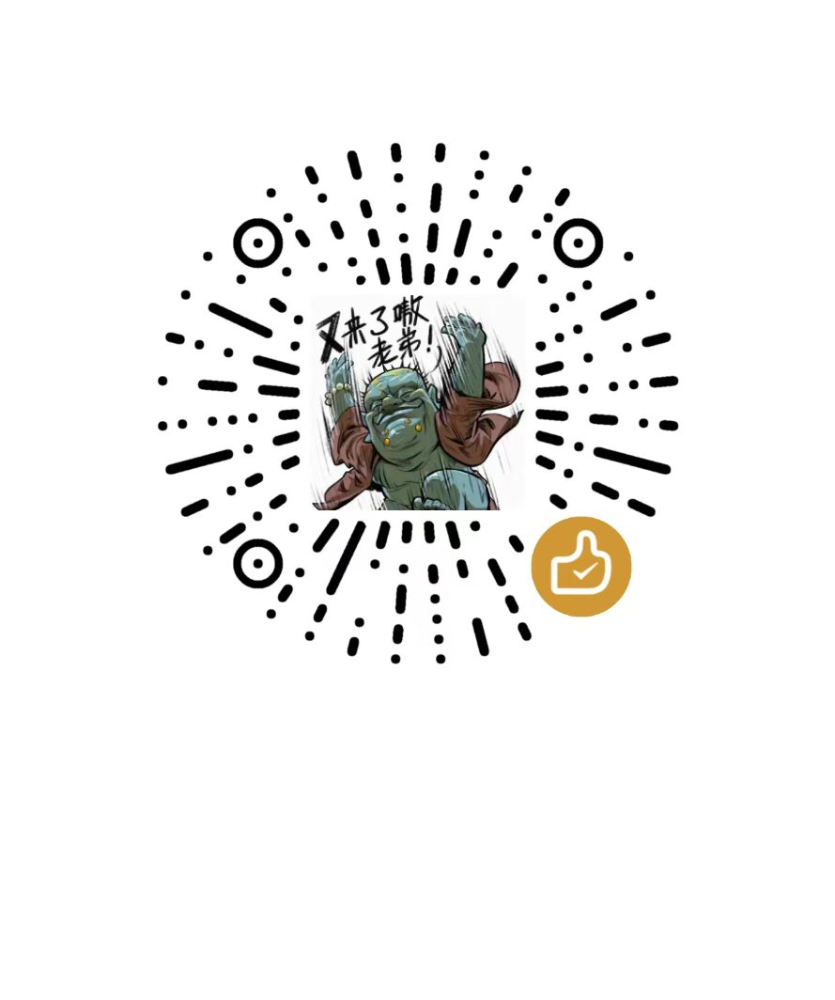

上手指南 · 第 2 步
代理软件的购买与使用
目标：让电脑和手机都能正常访问海外服务（ChatGPT、GitHub、Google 等）。方案是「一个服务商的订阅 + 各平台一个客户端」，同一条订阅链接到处能用，电脑上全程十分钟。
30 秒结论
- 买 Lite 年付套餐（19.95 USD / 年，2 台设备，每月 100GB+），个人够用
- 电脑用 Clash Verge Rev（免费开源），Android 用 Clash Meta for Android，iOS 要海外区 Apple ID 买 Shadowrocket
- 流程：客户中心拿订阅链接 → 导入客户端 → 选节点 → 开系统代理
前置条件：一台 Windows 或 macOS 电脑。还没有？先看 第 1 步：租一台电脑过渡。
一、选套餐并购买
两个套餐的差别只在设备数和专线。自己一个人、一台电脑一部手机，Lite 年付足够；要给家人或同事共用、或者对延迟敏感，再看 Pro。
Lite 推荐
$19.95 USD / 年
- 单用户 / 2 台设备同时在线
- 节点：香港、日本、美国、欧洲、澳大利亚
- 全平台客户端，IPv4 / IPv6 双栈
- 每月 100GB+ 流量
Pro
$12.95 USD / 月
- 单用户 / 5 台设备同时在线
- 国际专线 IPLC，额外节点
- 其余同 Lite
二、它是怎么工作的（一分钟）
服务商在不同地区部署了服务器，并给你一条订阅链接——本质是「配置下载地址」，里面包含所有节点的地址、端口和加密方式。Clash Verge Rev 读取它之后：
- 应用的网络请求先交给 Clash Verge Rev；
- 客户端按规则判断这条请求要不要走代理；
- 要走的，经你选的远程节点转发；不用走的（国内网站）直接连接；
- 客户端定期刷新订阅，拿到最新节点。
订阅链接等同于账号密码，不要分享、不要发到群里。泄露了就到客户中心重置链接，并提交工单重置服务密码。
三、电脑上五步开通
-
下载客户端
到 GitHub Releases 下载最新版：Windows 64 位选
x64安装包；macOS 按芯片选aarch64（Apple 芯片）或x64（Intel）。Windows 7 请改用 Clash for Windows v0.20.39。更新时选「安装前卸载」，但不要勾「删除数据」。Windows 提示 WebView2 错误的话，装一下 Microsoft Edge WebView2。
-
获取订阅链接
登录服务商客户中心 → 「我的产品与服务」→ 点进有效服务 → 找到「Clash / mihomo 配置」→「获得地址」，复制订阅链接。导入失败时也可以在这里「下载配置」拿到配置文件。
-
导入配置
打开 Clash Verge Rev → 左侧「订阅」（Profiles）→ 粘贴订阅链接 →「导入」。成功后到「代理」（Proxies），在 Proxy 分组里选一个节点，或选
Auto自动选择。导入失败就把下载好的配置文件拖进「订阅」页。 -
开启代理
「设置」里打开系统代理和 DNS 覆写。想开机就有网，再开「开机自启」和「静默启动」。
-
选工作模式
规则模式 自动判断哪些流量走代理。日常用这个。 全局模式 所有流量都走代理。启用后要选具体节点，不要选 DIRECT。 直连模式 完全不走代理。
四、手机上怎么用
订阅链接是通用的，手机装一个支持 Clash 配置的客户端，导入同一条链接即可。Lite 套餐允许 2 台设备同时在线，一台电脑加一部手机正好。
| Android | 装 Clash Meta for Android（GitHub Releases 里的 apk，选 arm64-v8a）。打开 → 配置 → 新建 → URL → 粘贴订阅链接 → 保存，回到首页点启动，首次会请求 VPN 权限，允许即可。 |
| iOS | 国区 App Store 没有这类 App。需要一个海外区 Apple ID（做法见第 3 步里 iPhone 那段），用它买 Shadowrocket（约 2.99 美元，礼品卡付款）。打开 → 右上角 + → 类型选 Subscribe → 粘贴订阅链接，回到首页打开开关。 |
| 鸿蒙 / 其他 | 能装 apk 的按 Android 走；不能的先用电脑，手机可以连电脑开的局域网代理（Clash Verge Rev 设置里打开「局域网连接」，手机 Wi-Fi 手动代理填电脑 IP 和端口 7897）。 |
手机上不需要「系统代理」这个概念，客户端会以 VPN 方式接管流量；同样选「规则模式」，国内 App 不受影响。
五、不通时先查这四项
| 浏览器不走代理 | 检查「系统代理」是否开启；手动配代理的软件或浏览器扩展，端口填 7897 |
| 订阅无法导入 | 到客户中心下载配置文件，拖进「订阅」页 |
| 某个节点连不上 | 换节点，或重新更新订阅 |
| 所有节点都不通 | 到客户中心看服务是否过期或被暂停 |
Support
这篇内容帮到你了吗？
指南会一直免费。如果它替你省了时间，欢迎请我喝杯咖啡，支持我继续整理下一篇。
完全自愿，所有指南免费阅读。

下一步
网络通了，就可以去注册账号了：第 3 步：注册并订阅 ChatGPT。回到 上手指南 看全部三步。
更新于 2026-09-14